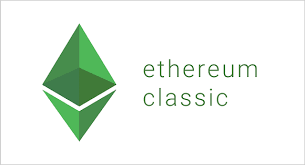

이더리움 클래식(Ethereum Classic)은 오픈 소스이며, 블록체인 기술 기반 분산 컴퓨팅 플랫폼을 갖춘 스마트 계약 기능이다.
이더리움 클래식은 분산된 튜링 완전 가상머신인 이더리움 가상머신을 제공한다.
이 가상머신은 국제적인 네트워크의 노드를 사용하여 스크립트를 실행한다.
이더리움 클래식은 또한 "classic ether"라는 가치가있는 토큰을 제공하는데,
이 토큰은 개인간에 양도되거나, 가상화폐 지갑에 보관 할 수 있다.
이더리움 클래식 토큰은 가상화폐 시장에서 거래 될 수 있다.
국제거래 메카니즘인 Gas는 네트워크에서 스팸을 차단해 왔다. 또한, 자원을 요청에따라서 적절하게 배분해 왔다.
이더리움 플랫폼은 두가지 버젼으로 나뉘어 졌다. 하나는 '이더리움 클래식(Ethereum Classic)'이며 또 하나는 이더리움(Ethereum)이다.
나누어지기 전에는 단순히 이더리움(Ethereum)이라고 불렸다.
하드포크 이후, 새로운 토큰의 이름은 계속해서 이더리움이라 불리게 되었고, 예전 토큰의 이름이 이더리움 클래식이라 불리게 되었다.
이더리움 클래식은 The DAO에 관한 이더리움 설립자와의 의견 불일치의 결과로 탄생하였다.
이더리움 클래식은 이더리움 커뮤니티에서 이더리움의 하드포크를 철학적 배경에 기초하여 반대한 구성원들을 통합하였다.
DAO하드포크 이전 이더리움을 보유한 사람들은(블록 1920000[7]) 이더리움이 나누어진 이후에 같은양의 이더리움 클래식 토큰을 얻게 되었다.
이더리움 클래식은 2016년 10월 25일에 이더리움이 약 일주일 전쯤 진행했던 내부 가격 조정을 위한 기술적인 하드포크를 진행하였다.
이 하드포크의 목적은 이더리움과 이더리움 클래식에서 예전에 있어왔던 공격에 취약한 부분을 삭제하기 위함이었다. 토큰 분할은 2017년 초에 시작되었고,
2015년에 이더리움에 공격을 목적으로 삽입되었던 "bomb complexity"을 새로운 토큰을 채굴하는데 필요한 계산을 기하급수적으로 늘림으로서, 지연하는데 성공하였다.
또한 2017년 말에는 비트코인과 유사하게 토큰 전체양을 제한하는 하드포크를 진행하였다.
